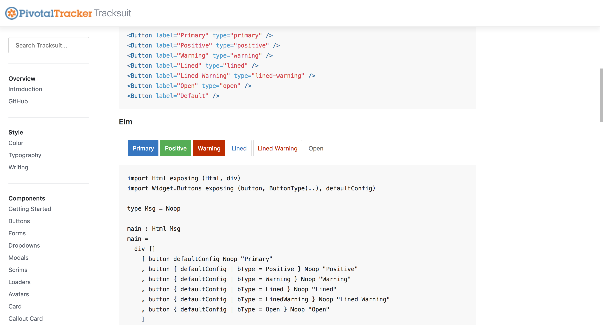
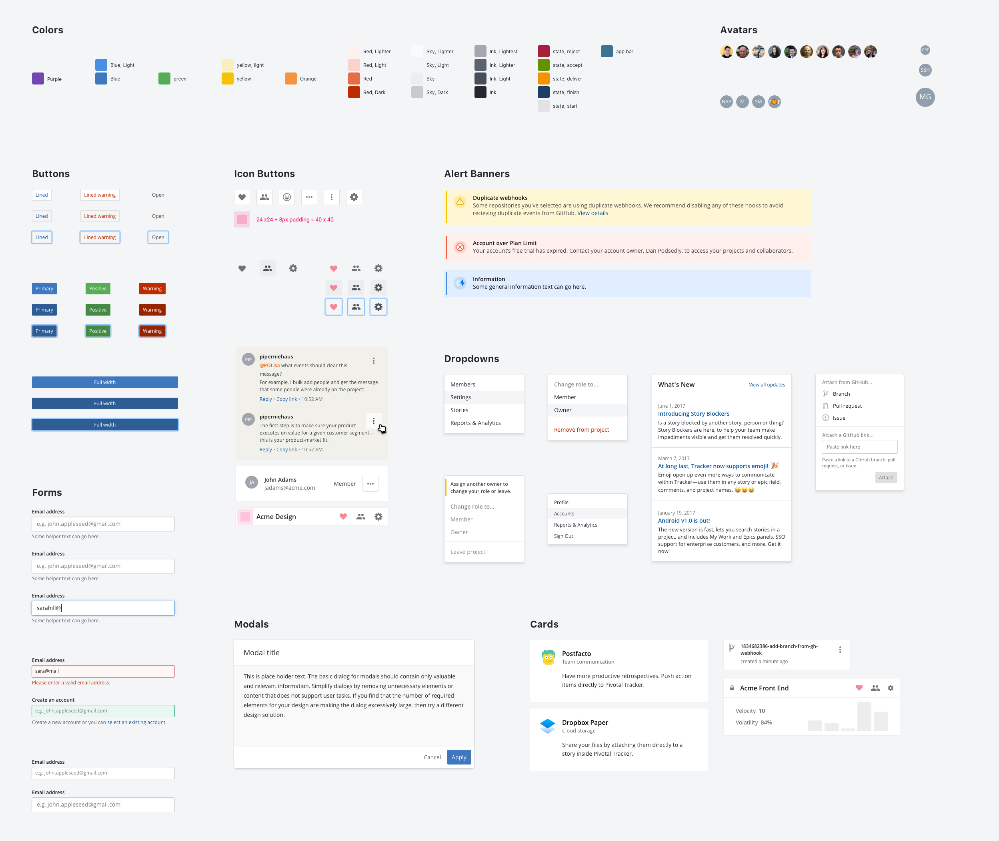

Pivotal Tracker has experienced a lot of growth over the past few years. As the team continued to grow, it became clear that we needed a way to scale the design and development process. A one-off solution can sometimes be necessary, but if these solutions aren't built on top of a solid foundation, we eventually find ourselves with a lot of design and technical debt.
I started to think about how we could unify our language across product and development. So, for a hackday project I worked on building a styleguide that housed HTML and CSS based components with documentation around how to use them. The styleguide is built on the Hologram framework. Hologram makes it easy to write and maintain documentation with markdown.
The styleguide started to evolve into a pattern library of react based components. The goal was to make it easy for anyone to be able to see what components are actually being used in production as opposed to be it just being a source of reference.
To continue to bridge the gap between development and design, we created a Sketch UI Kit that is composed of Sketch symbols built to mirror the components found in the Pattern Library. Having these sets of tools starts to bring us closer to speaking the same language and thinking about the pieces of the UI in a similar way.
The Tracker Design and Development teams are continuing to refine the process of maintaing and scaling the Design System. As we continue to tackle some bigger user problems, we continue to think about the best user experience and the best way to capture that in the code.